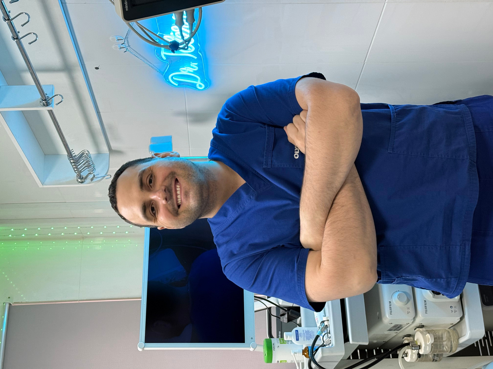
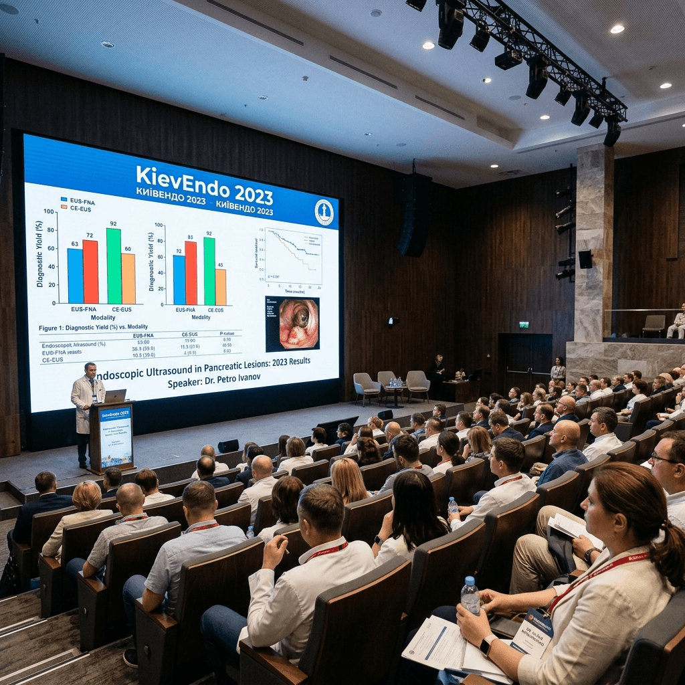

Розповідаю про гастроскопію, колоноскопію, підготовку та лікування без міфів та зайвого страху. Поради лікаря-ендоскопіста, хірурга, лікаря УЗД з 8-річним досвідом.

Лікар-ендоскопіст Тетернік О.О. розповідає про процедури, розвінчує міфи і ділиться корисними порадами з підготовки до ендоскопії.
Surgeon Endoscopist
A professional with 8 years of experience in performing high-precision endoscopic and surgical interventions. The main priority is maximum safety, painlessness, and patient comfort during every procedure.
Thanks to modern equipment and an individual approach, we provide accurate diagnosis and effective treatment of gastrointestinal diseases.
Ендоскопічний огляд стравоходу, шлунка та 12-палої кишки з високою деталізацією слизової.
Високоточна діагностика товстого кишечника, виявлення та видалення поліпів на ранніх стадіях.
Малоінвазивна діагностика та лікування захворювань жовчних протоків і підшлункової залози.
Ендоскопічний огляд дихальних шляхів, трахеї та бронхів для оцінки стану дихальної системи.
Безпечне та безболісне ультразвукове дослідження органів черевної порожнини та нирок.
Малоінвазивне видалення поліпів (поліпектомія), зупинка кровотеч та хірургічні втручання.
Лікувальна справа · Лікар-хірург
Один з найстаріших та найпрестижніших медичних університетів України. Після закінчення університету присвоєно кваліфікацію лікаря вищої категорії.
Certificate of Attendance Dr Oleg Teternik. Milan, Italy.
Майстер-клас. Сертифікат №2026-2122-1023008-100062. 16,5 бала БПР.
Майстер-клас. Сертифікат №2025-2429-1011000-113117. 20 балів БПР.
Майстер-клас. Сертифікат №2025-2364-1018432-100016. 21 бал БПР.
Майстер-клас. Сертифікат №2025-2343-1019008-100144. 8 балів БПР.
Актуальні практики ендоскопії. Сертифікат №2025-2364-1019491-100491. 21 бал БПР.
Майстер-клас. Сертифікат №2025-2429-1004430-113117. 20 балів БПР.
Майстер-клас. Сертифікат №2024-1136-3707808-113117. 20 балів БПР.
Майстер-клас. Сертифікат №2024-1136-3707807-113117. 10 балів БПР.
International Endoscopic Conference. Exchange of experience with leading European specialists, discussion of the latest standards and technologies in operative endoscopy.
Scientific and Practical Conference. Presentation of clinical cases, discussion of modern techniques of minimally invasive surgery and diagnostic endoscopy in Ukraine.
